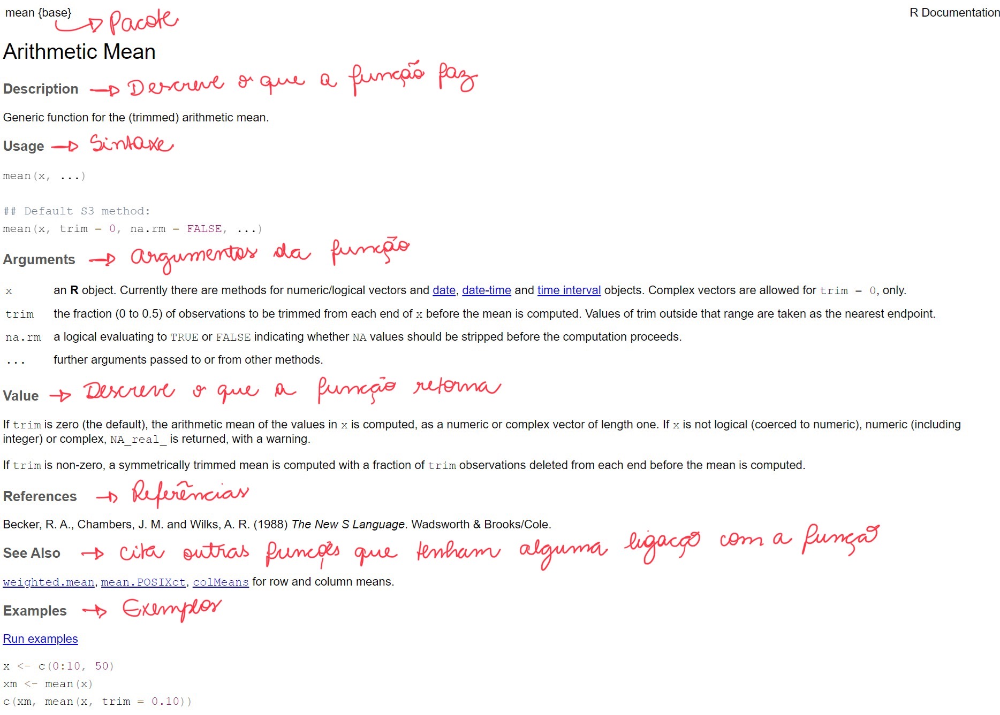

Code
# Obtendo ajuda sobre a função que calcula a média
help(mean) # ou
?mean Para pedir ajuda sobre uma função no R, basta digitar no console help(nome da função) ou ?nome da função.
# Obtendo ajuda sobre a função que calcula a média
help(mean) # ou
?mean A documentação exibida pode ser observada abaixo.

Procurar no Google e no Stack Overflow também ajuda muito. Na internet tem bastante material de qualidade.
A função citation( ) indica como citar o R.
citation()To cite R in publications use:
R Core Team (2023). _R: A Language and Environment for Statistical
Computing_. R Foundation for Statistical Computing, Vienna, Austria.
<https://www.R-project.org/>.
A BibTeX entry for LaTeX users is
@Manual{,
title = {R: A Language and Environment for Statistical Computing},
author = {{R Core Team}},
organization = {R Foundation for Statistical Computing},
address = {Vienna, Austria},
year = {2023},
url = {https://www.R-project.org/},
}
We have invested a lot of time and effort in creating R, please cite it
when using it for data analysis. See also 'citation("pkgname")' for
citing R packages.Para saber qual é o diretório de trabalho atual no R, você pode usar a função getwd(). Ela retornará o caminho do diretório onde o R está atualmente operando.
getwd()[1] "/Users/lucasito/Documents/quarto_book_bioestatisticaR"Se precisar mudar o diretório basta usar a fução setwd(“C:/caminho/para/o/novo/diretorio”).
No R, você pode adicionar comentários ao seu script usando o símbolo #. Tudo o que estiver após esse símbolo na mesma linha será considerado um comentário e não será executado.
# Este script calcula a soma de dois números
3+4[1] 7O R permite que realizemos operações com variáveis pré definidas.
Obs: Cuidado para não definir objetos diferentes com mesmo nome. O R sobrescreve as variáveis se você defini-las iguais!
É importante conhecer os principais operadores aritméticos, relacionais e lógicos antes de iniciarmos nossos primeiros passos com o R. O R pode funcionar como uma calculadora!
| Operador | Descrição |
|---|---|
+ |
Adição |
- |
Subtração |
* |
Multiplicação |
/ |
Divisão |
^ ou **
|
Exponenciação |
%% |
Módulo |
== |
Igualdade |
> |
Maior que |
< |
Menor que |
<= |
Menor ou igual |
>= |
Maior ou igual |
!= |
Diferença |
%in% |
Pertencimento |
& |
Operador lógico E |
| |
Operador lógico OU |
2+2[1] 43+3[1] 610-5[1] 51-2[1] -12*2[1] 43*3[1] 910/2[1] 51/2[1] 0.52^2[1] 4#ou
2**2[1] 4Para exemplificação dos operadores relacionais e lógicos considere os valores de colesterol de 5 pacientes:
colesterol <- c(180, 220, 240, 190, 200)
## Operadores relacionais
# Igualdade
colesterol == 220 [1] FALSE TRUE FALSE FALSE FALSE# Diferença
colesterol != 200 [1] TRUE TRUE TRUE TRUE FALSE# Menor que
colesterol < 200 # limite desejável [1] TRUE FALSE FALSE TRUE FALSE# Menor ou igual
colesterol <= 200 [1] TRUE FALSE FALSE TRUE TRUE#Maior que
colesterol > 240 # limite alto [1] FALSE FALSE FALSE FALSE FALSE#Maior ou igual
colesterol >= 240 [1] FALSE FALSE TRUE FALSE FALSEcolesterol[colesterol >= 240][1] 240#Pertencimento
# Definindo os níveis de colesterol que consideramos "alto"
colesterol_alto <- colesterol[colesterol >= 240]
colesterol_alto[1] 240# Usando o operador de pertencimento para verificar quais níveis estão altos
resultado_pertencimento <- colesterol %in% colesterol_alto
resultado_pertencimento[1] FALSE FALSE TRUE FALSE FALSE## Usando operadores lógicos
#Ou
(colesterol < 200) | (colesterol > 240) [1] TRUE FALSE FALSE TRUE FALSE#E
(colesterol > 200) & (colesterol < 240) [1] FALSE TRUE FALSE FALSE FALSEcolesterol[(colesterol > 200) & (colesterol < 240)][1] 220Com frequência, trabalhamos com diversas classes numéricas no R. Podemos encontrar números inteiros (integer), números decimais (numeric ou double) e números complexos (complex). Para determinar a classe de um número, podemos utilizar a função **class()** no número ou na variável que queremos analisar. Abaixo, apresentamos alguns exemplos:
class(10)[1] "numeric"class(20.34)[1] "numeric"class(3i)[1] "complex"No R, as funções funcionam de maneira análoga. Basicamente, uma função no R age como uma máquina: ela recebe dados de entrada, processa-os, e retorna um resultado final (Sena e Fernandes, 2022).
De acordo com Grolemund (Grolemund, 2014), todas as funções no R possuem os mesmos componentes, que são:
nome: é o identificador que o usuário utiliza para chamar a função, seguido de ();
argumentos: são os parâmetros onde o usuário pode fornecer valores e ajustar configurações para obter o resultado desejado;
corpo: é o bloco de código que o R executa toda vez que a função é chamada;
valores padrão: argumentos opcionais que podem ser configurados pelo usuário;
resultado: é a saída gerada pela função.
log10(10)[1] 1exp(1)[1] 2.718282choose(10,2)[1] 45Observação: Em expressões matemáticas deve-se utilizar APENAS parênteses “( )”. Chaves “{ }” e colchetes “[ ]” têm outras funções no R.
Resolva a seguinte expressão utilizando os comandos do R.
\[ \frac{5}{3} + \frac{ 2 + (2^{2} \sqrt{17}) - 3^{-1} }{ 500 } \]
#vetor de números
n_vetor <- c(1,2,3,4,5)
n_vetor[1] 1 2 3 4 5#vetor de palavras (caracteres)
p_vector <- c("oi","meu","nome","é","Maria")
p_vector[1] "oi" "meu" "nome" "é" "Maria"Também é possível realizar operações com vetores. Suponha que esteja interessado em calcular o índice de massa corpórea de indivíduos pertencentes a um estudo.
[1] 21.48437 22.20408 22.21368 24.37673 27.77691 27.00513## Criando uma função
imc <- function(peso,altura){
resultado <- peso/(altura^2)
return(resultado)
}
imc(peso,altura)[1] 21.48437 22.20408 22.21368 24.37673 27.77691 27.00513x <- 1:10
x [1] 1 2 3 4 5 6 7 8 9 10x + 1 [1] 2 3 4 5 6 7 8 9 10 11y <- 11:20
y [1] 11 12 13 14 15 16 17 18 19 20x + y [1] 12 14 16 18 20 22 24 26 28 30Abaixo encontram-se algumas funções básicas do R.
| Função | Descrição |
|---|---|
length() |
Retorna o comprimento de um vetor. |
sum() |
Retorna a soma de um vetor. |
mean() |
Retorna a média de um vetor. Atenção para o argumento na.rm=TRUE. |
sd() |
Retorna o desvio padrão de um vetor. Atenção para o argumento na.rm=TRUE. |
median() |
Retorna a mediana de um vetor. Atenção para o argumento na.rm=TRUE. |
var() |
Retorna a variância de um vetor. Atenção para o argumento na.rm=TRUE. |
cor() |
Retorna a correlação entre dois vetores numéricos. |
min() |
Retorna o mínimo de um vetor. Atenção para o argumento na.rm=TRUE. |
max() |
Retorna o máximo de um vetor. Atenção para o argumento na.rm=TRUE. |
range() |
Retorna o mínimo e o máximo de um vetor. |
summary() |
Retorna um sumário dos dados. |
quantile() |
Retorna os quantis do conjunto numérico. |
round() |
Retorna o valor arredondado. |
NOTA: Lembre-se de utilizar o help para compreender qualquer função no R. É possível ver sua utilização, descrição, argumentos e exemplos de utilização.
Para praticarmos as funções mencionadas, considere que você está investigando os níveis de colesterol total em um grupo de 10 pacientes.
#Dados
colesterol <- c(180, 195, 210, 190, 200, 175, 220, 185, 205, 190)Qual a média e desvio padrão dos níveis de colesterol total nessa amostra?
Outras funções:
Um dataframe é uma estrutura de dados utilizada para se armazenar tabelas de dados. Ele é equivalente a uma planilha de Excel, por exemplo.
A principal característica de um data frame é possuir linhas e colunas.
Como exemplo, considere o famoso conjunto de dados Íris, que fornece as medidas em centímetros das variáveis comprimento e largura da sépala e comprimento e largura da pétala, respectivamente, para 50 flores de cada uma das 3 espécies de íris. As espécies são Iris setosa, versicolor e virginica.
| Sepal.Length | Sepal.Width | Petal.Length | Petal.Width | Species |
|---|---|---|---|---|
| 5.1 | 3.5 | 1.4 | 0.2 | setosa |
| 4.9 | 3.0 | 1.4 | 0.2 | setosa |
| 4.7 | 3.2 | 1.3 | 0.2 | setosa |
| 4.6 | 3.1 | 1.5 | 0.2 | setosa |
| 5.0 | 3.6 | 1.4 | 0.2 | setosa |
| 5.4 | 3.9 | 1.7 | 0.4 | setosa |
tail(iris) #Últimas linhas| Sepal.Length | Sepal.Width | Petal.Length | Petal.Width | Species | |
|---|---|---|---|---|---|
| 145 | 6.7 | 3.3 | 5.7 | 2.5 | virginica |
| 146 | 6.7 | 3.0 | 5.2 | 2.3 | virginica |
| 147 | 6.3 | 2.5 | 5.0 | 1.9 | virginica |
| 148 | 6.5 | 3.0 | 5.2 | 2.0 | virginica |
| 149 | 6.2 | 3.4 | 5.4 | 2.3 | virginica |
| 150 | 5.9 | 3.0 | 5.1 | 1.8 | virginica |
str(iris) #Estrutura geral do data-frame'data.frame': 150 obs. of 5 variables:
$ Sepal.Length: num 5.1 4.9 4.7 4.6 5 5.4 4.6 5 4.4 4.9 ...
$ Sepal.Width : num 3.5 3 3.2 3.1 3.6 3.9 3.4 3.4 2.9 3.1 ...
$ Petal.Length: num 1.4 1.4 1.3 1.5 1.4 1.7 1.4 1.5 1.4 1.5 ...
$ Petal.Width : num 0.2 0.2 0.2 0.2 0.2 0.4 0.3 0.2 0.2 0.1 ...
$ Species : Factor w/ 3 levels "setosa","versicolor",..: 1 1 1 1 1 1 1 1 1 1 ...dim(iris) #Dimensões do data-frame[1] 150 5names(iris) #Nomes das colunas[1] "Sepal.Length" "Sepal.Width" "Petal.Length" "Petal.Width" "Species" colnames(iris) #Nomes das colunas[1] "Sepal.Length" "Sepal.Width" "Petal.Length" "Petal.Width" "Species" row.names(iris) #Nomes das linhas [1] "1" "2" "3" "4" "5" "6" "7" "8" "9" "10" "11" "12"
[13] "13" "14" "15" "16" "17" "18" "19" "20" "21" "22" "23" "24"
[25] "25" "26" "27" "28" "29" "30" "31" "32" "33" "34" "35" "36"
[37] "37" "38" "39" "40" "41" "42" "43" "44" "45" "46" "47" "48"
[49] "49" "50" "51" "52" "53" "54" "55" "56" "57" "58" "59" "60"
[61] "61" "62" "63" "64" "65" "66" "67" "68" "69" "70" "71" "72"
[73] "73" "74" "75" "76" "77" "78" "79" "80" "81" "82" "83" "84"
[85] "85" "86" "87" "88" "89" "90" "91" "92" "93" "94" "95" "96"
[97] "97" "98" "99" "100" "101" "102" "103" "104" "105" "106" "107" "108"
[109] "109" "110" "111" "112" "113" "114" "115" "116" "117" "118" "119" "120"
[121] "121" "122" "123" "124" "125" "126" "127" "128" "129" "130" "131" "132"
[133] "133" "134" "135" "136" "137" "138" "139" "140" "141" "142" "143" "144"
[145] "145" "146" "147" "148" "149" "150"Para criar um data frame, basta utilizar a função data.frame(). Veja o exemplo abaixo.
# Criando um data.frame com informações de pacientes
pacientes <- data.frame(
nome = c("Maria", "João", "Ana", "Pedro", "Carlos"),
idade = c(28, 35, 50, 45, 60), # em anos
peso = c(65, 82, 70, 78, 90), # em kg
altura = c(1.65, 1.75, 1.60, 1.80, 1.68), # em metros
pressao_sistolica = c(120, 135, 140, 130, 150), # Pressão sistólica (mmHg)
pressao_diastolica = c(80, 85, 90, 88, 95) # Pressão diastólica (mmHg)
)
# Exibindo o data.frame
pacientes| nome | idade | peso | altura | pressao_sistolica | pressao_diastolica |
|---|---|---|---|---|---|
| Maria | 28 | 65 | 1.65 | 120 | 80 |
| João | 35 | 82 | 1.75 | 135 | 85 |
| Ana | 50 | 70 | 1.60 | 140 | 90 |
| Pedro | 45 | 78 | 1.80 | 130 | 88 |
| Carlos | 60 | 90 | 1.68 | 150 | 95 |